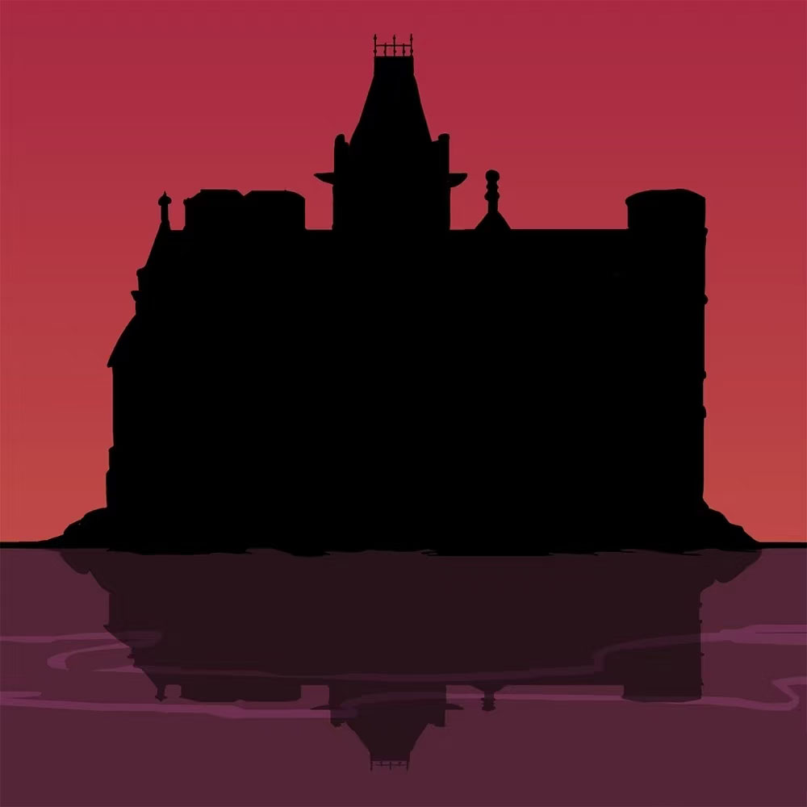
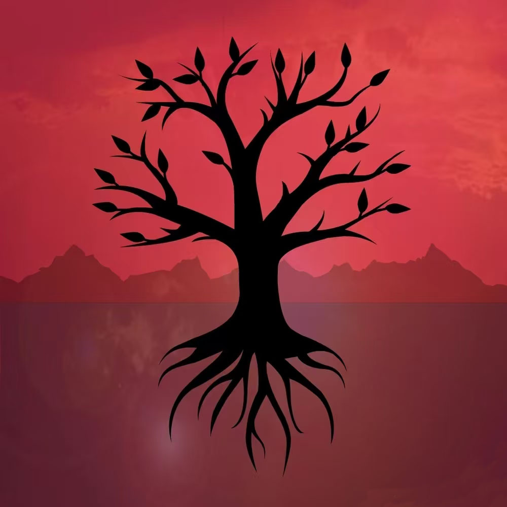
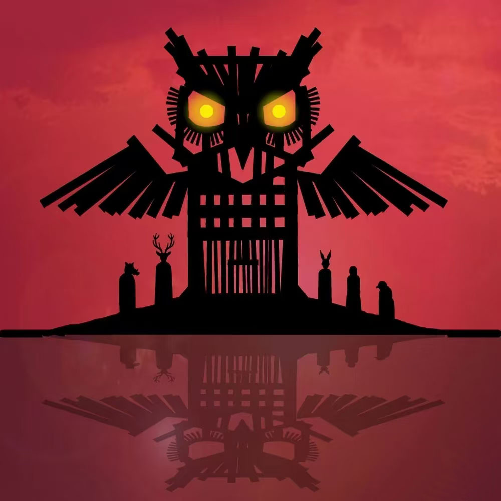
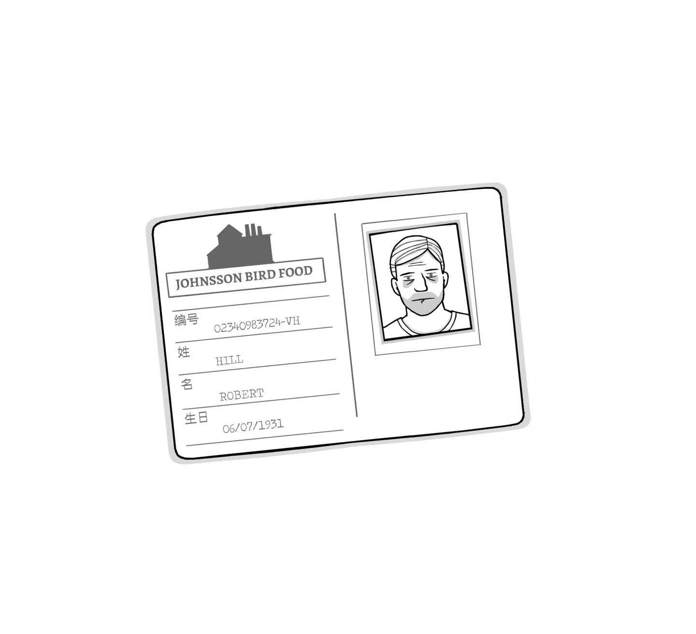
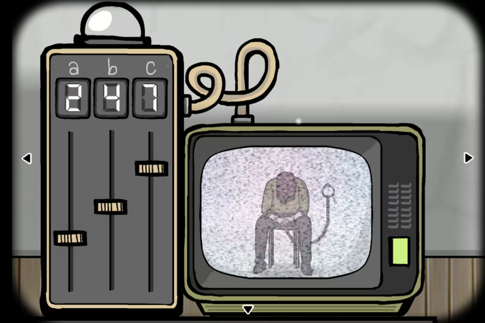
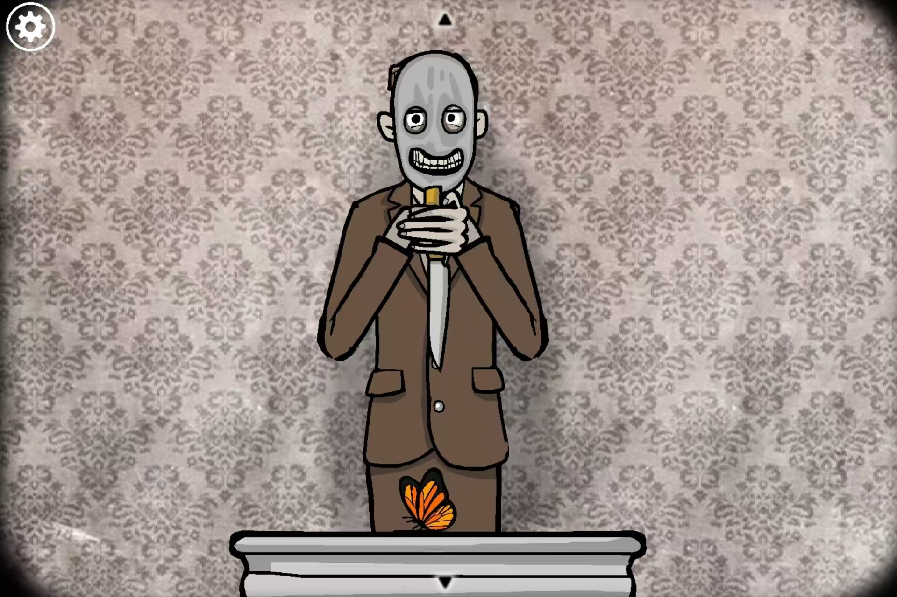
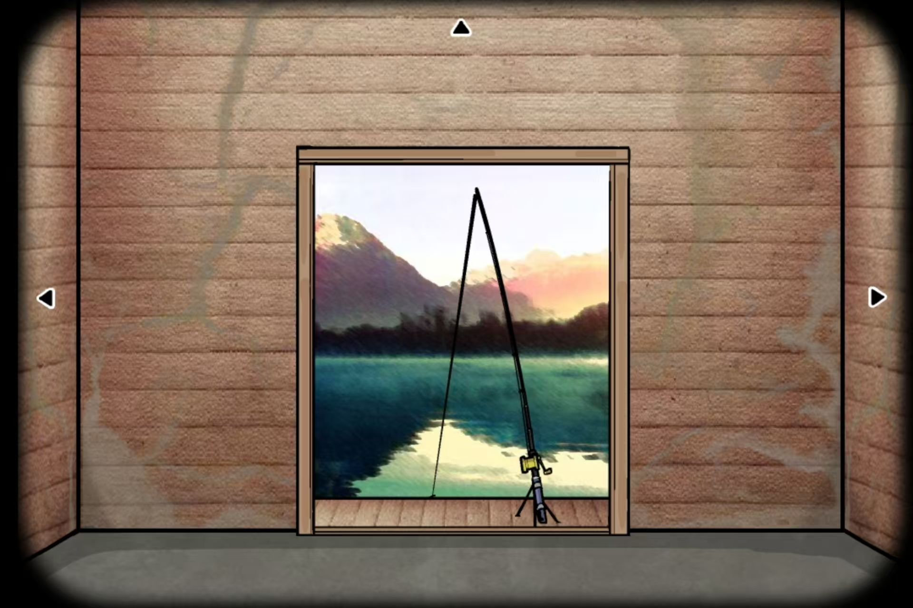
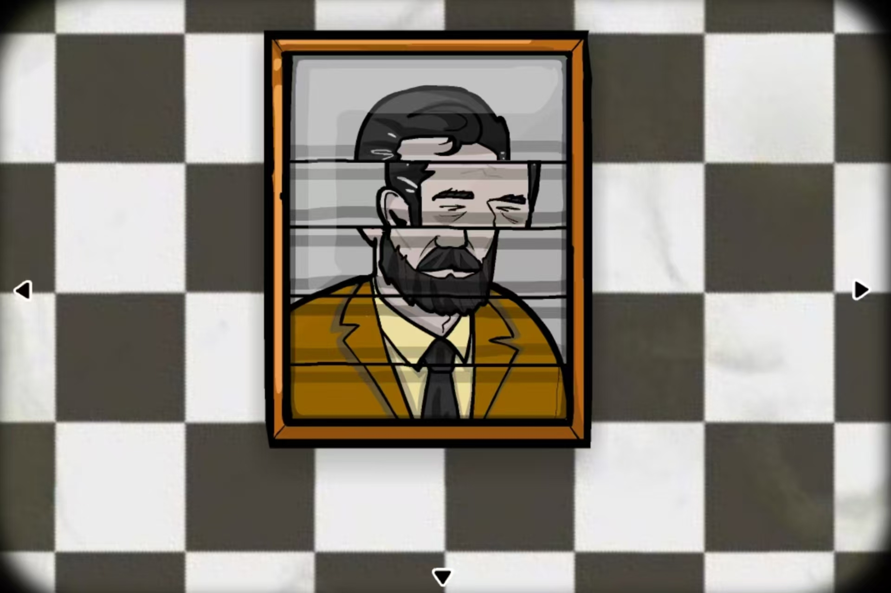
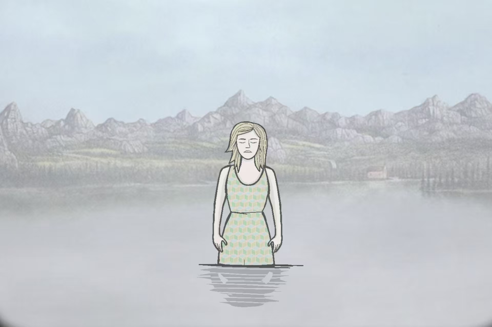
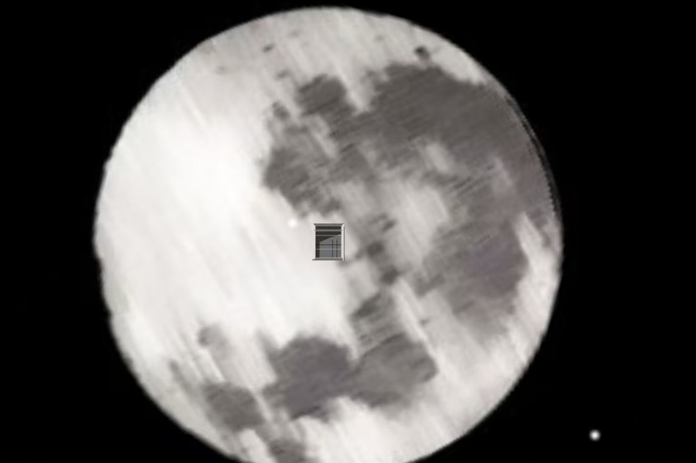

逃离方块系列 (Cube Escape Series)
在这个点击式冒险游戏中，你会跟随着Dale, Laura以及其他锈湖角色Mr. Crow,Mr. Owl甚至是一只鹦鹉的脚步探寻奥秘。
锈湖旅馆 (Rusty Lake Hotel)
迎接我们的贵客入住锈湖旅馆，让他们度过一段愉快的时光。我们将摆设五场盛宴，确保每位贵客都死得其所。
锈湖：根源 (Rusty Lake: Roots)
当詹姆斯·范德布姆在自己所继承房子的花园里种下一颗特殊的种子后，他的生活发生了剧变。在人生之树上通过揭开画像来扩展你的血缘关系。
锈湖：天堂岛 (Rusty Lake Paradise)
艾兰德（Eilander）家族中的长子——雅各布（Jakob）在母亲去世后回到了天堂岛。自从母亲离奇死亡后，这座岛屿仿佛被十灾诅咒了。一起来寻找母亲的隐藏记忆，参加离奇的家族仪式，阻止灾祸的发生！




白门 (The White Door)
在一所精神卫生中心里醒来的Bob患了严重的失忆症。他需要每天遵循严格的作息时间，通过探索自己的梦境来找回记忆。 进入那扇白门，探寻锈湖世界独一无二的秘密！探寻Bob的梦境并帮他找到失去的记忆。你能忍受每天严格的作息，直到让Bob的生活重新充满色彩吗？
此外，锈湖工作室还制作了一个网站，内含白门组织介绍及线下推理线索，十国玩家线上破译代码，线下寻找方块，历时一个月，成功解锁线下十个方块
白门网站：
https://www.mentalhealthealthandfishing.com



轮回的房间 (Samsara Room)
你在一个陌生又诡异的房间里苏醒过来，你能成功逃脱吗？
内在往昔（The Past Within）
rusty lake系列游戏中唯一一款双人游戏，你的每一个动作，都会在两个时空产生连锁反应，深入家族核心的黑暗记忆，揭开一个家族的血泪与诅咒。
地铁繁花（Underground Blossom）
泛黄的信件，引领你进入废弃地铁站，真相在光影间交错间显现，坠入地底，找回被时间偷走的名字。
Rose被Albert抓走，Laura根据线索一步步追查，最后在一片虚无中找到了母亲Rose


点击图片，前方小高能





